Chapter 5 Tools and plots
5.1 Transformations
5.1.1 Expression data
Let’s start with the comparison of two vectors of matching expression intensities such as those from two samples in the iprg3 dataset. Let’s extract the intensities of samples JD_06232014_sample1-A.raw (second column) and JD_06232014_sample1_B.raw (third column) and produce a scatter plot of one against the other.
x <- iprg3[[2]]
y <- iprg3[[3]]
plot(x, y)
Due to the distribution of the raw intensities, where most of the intensities are low with very few high intensities (see density plots below), the majority of points are squeezed close to the origin of the scatter plot.
plot(density(na.omit(x)), col = "blue")
lines(density(na.omit(y)), col = "red")This has negative effects as it (1) leads to overplotting in the low intensity range and (2) gives too much confidence in the correlation of the two vectors. A simple way to avoid this effect is to directly log-tranform the data or set the graph axes to log scales:
par(mfrow = c(1, 2))
plot(log10(x), log10(y))
plot(x, y, log = "xy")We will see better visualisations to detect correlation between sample replicates below.
It is possible to generalise to production of scatter plots to more samples using the pairs function:
pairs(iprg3[2:6], log = "xy")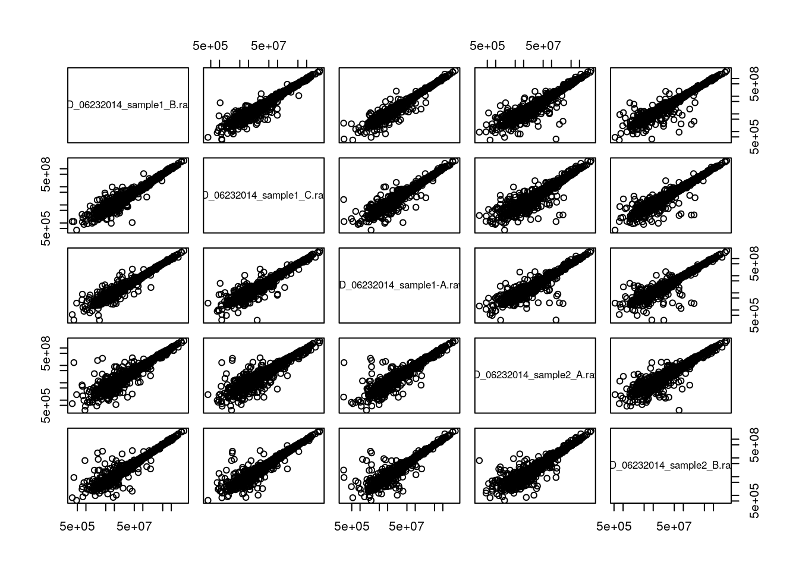
A lot of space is wasted by repeating the same sets of plots in the upper right and lower left triangles of the matrix. See the pairs documentation page.
A general technique to overcome overplotting is to set the alpha scale (transparency), of to use graphics::smoothScatter:
par(mfrow = c(1, 2))
plot(x, y, pch = 19, col = "#00000010", log = "xy")
smoothScatter(log10(x), log10(y))5.1.2 Fold changes
Log-transformation also comes handy when computing fold-changes. Below we calculate the fold-changes and log2 fold-changes (omitting missing values)
fc <- na.omit(iprg3[[2]] / iprg3[[3]])
lfc <- log2(fc)Below, we see how the log2 fold-changes become symmetrical around zero (the absence of change), with positive values corresponding to up-regulation and negative values to down-regulation.
plot(density(lfc), ylim = c(0, 5))
abline(v = median(lfc))
lines(density(fc), col = "red")
abline(v = median(fc), col = "red")
Note: when the data is already log-transformed, log fold-changes are computed by subtracting values.
5.2 Comparing samples and linear models
Let’s return to the scatter plot example above and focus on three replicates from consitions 1 and 4, remove missing values and log-tranform the intensites.
x <- log2(na.omit(iprg3[, c(2, 3, 11)]))Below, we use the pairs function and print the pairwise correlations in the upper right traingle.
## put (absolute) correlations on the upper panels,
## with size proportional to the correlations.
## From ?pairs
panel.cor <- function(x, y, digits = 2, prefix = "", cex.cor, ...) {
usr <- par("usr"); on.exit(par(usr))
par(usr = c(0, 1, 0, 1))
r <- abs(cor(x, y))
txt <- format(c(r, 0.123456789), digits = digits)[1]
txt <- paste0(prefix, txt)
if (missing(cex.cor)) cex.cor <- 0.8/strwidth(txt)
text(0.5, 0.5, txt, cex = cex.cor * r)
}
pairs(x, lower.panel = panel.smooth, upper.panel = panel.cor)It is often assumed that high correlation is a halmark of good replication. Rather than focus on the correlation of the data, a better measurement would be to look a the log2 fold-changes, i.e. the distance between repeated measurements. The ideal way to visualise this is on an MA-plot:
par(mfrow = c(1, 2))
r1 <- x[[1]]
r2 <- x[[2]]
M <- r1 - r2
A <- (r1 + r2)/2
plot(A, M); grid()
library("affy")
affy::ma.plot(A, M)See also this post on the Simply Statistics blog.
abline(0, 1) can be used to add a line with intercept 0 and slop 1. It we want to add the line that models the data linearly, we can calculate the parameters using the lm function:
lmod <- lm(r2 ~ r1)
summary(lmod)##
## Call:
## lm(formula = r2 ~ r1)
##
## Residuals:
## Min 1Q Median 3Q Max
## -3.4939 -0.0721 0.0126 0.0881 3.4595
##
## Coefficients:
## Estimate Std. Error t value Pr(>|t|)
## (Intercept) 0.348190 0.091842 3.791 0.000153 ***
## r1 0.985878 0.003688 267.357 < 2e-16 ***
## ---
## Signif. codes: 0 '***' 0.001 '**' 0.01 '*' 0.05 '.' 0.1 ' ' 1
##
## Residual standard error: 0.3263 on 3024 degrees of freedom
## Multiple R-squared: 0.9594, Adjusted R-squared: 0.9594
## F-statistic: 7.148e+04 on 1 and 3024 DF, p-value: < 2.2e-16which can be used to add the adequate line that reflects the (linear) relationship between the two data
plot(r1, r2)
abline(lmod, col = "red")As we have seen in the beginning of this section, it is essential not to rely solely on the correlation value, but look at the data. This also holds true for linear (or any) modelling, which can be done by plotting the model:
par(mfrow = c(2, 2))
plot(lmod)Cook’s distance is a commonly used estimate of the influence of a data point when performing a least-squares regression analysis and can be used to highlight points that particularly influence the regression.
Leverage quantifies the influence of a given observation on the regression due to its location in the space of the inputs.
See also ?influence.measures.
Challenge
- Take any of the
iprg3replicates, model and plot their linear relationship.- The Anscombe quartet is available as
anscombe. Load it, create a linear model for one \((x_i, y_i)\) pair of your choice and visualise/check the model.
x3 <- anscombe[, 3]
y3 <- anscombe[, 7]
lmod <- lm(y3 ~ x3)
summary(lmod)##
## Call:
## lm(formula = y3 ~ x3)
##
## Residuals:
## Min 1Q Median 3Q Max
## -1.1586 -0.6146 -0.2303 0.1540 3.2411
##
## Coefficients:
## Estimate Std. Error t value Pr(>|t|)
## (Intercept) 3.0025 1.1245 2.670 0.02562 *
## x3 0.4997 0.1179 4.239 0.00218 **
## ---
## Signif. codes: 0 '***' 0.001 '**' 0.01 '*' 0.05 '.' 0.1 ' ' 1
##
## Residual standard error: 1.236 on 9 degrees of freedom
## Multiple R-squared: 0.6663, Adjusted R-squared: 0.6292
## F-statistic: 17.97 on 1 and 9 DF, p-value: 0.002176par(mfrow = c(2, 2))
plot(lmod)
5.3 Plots for statistical analyses
Let’s use the ALL_bclneg dataset, that we already have analysed with limma in the Data chapter.
Whenever performing a statistical test, it is important to quality check the distribution of non-adjusted p-values. Below, we see an enrichment of small p-values, as opposed to a uniform distribution to be expected under the null hypothesis of absence of changes between groups.
fvarLabels(ALL_bcrneg)## [1] "logFC" "AveExpr" "t" "P.Value" "adj.P.Val" "B"hist(fData(ALL_bcrneg)$P.Value)The histograms below illustrate other distributions to beware of.

Another important visualisation for statistical results are the Volcano plots, that show the relationship between the significance of the individual tests (adjusted p-values) and their magnitude of the effect (log2 fold-changes).
lfc <- fData(ALL_bcrneg)$logFC
bh <- fData(ALL_bcrneg)$adj.P.Val
plot(lfc, -log10(bh),
main = "Volcano plot",
xlab = expression(log[2]~fold-change),
ylab = expression(-log[10]~adjusted~p-value))
grid()The volcano plot can further be annotated using vertical and horizontal lines depicting thresholds of interest or points can be colour-coded based on their interest.
lfc <- fData(ALL_bcrneg)$logFC
bh <- fData(ALL_bcrneg)$adj.P.Val
sign <- abs(lfc) > 1 & bh < 0.01
plot(lfc, -log10(bh),
main = "Volcano plot",
col = ifelse(sign, "red", "black"),
pch = ifelse(sign, 19, 1),
xlab = expression(log[2]~fold-change),
ylab = expression(-log[10]~adjusted~p-value))
grid()
abline(v = c(-1, 1), lty = "dotted")
abline(h = -log10(0.05), lty = "dotted")It is also possible to identify and label individual points on the plot using the identify function
i <- identify(lfc, -log10(bh), featureNames(ALL_bcrneg))5.4 Visualising intersections
Venn and Euler diagrams are popular representation when comparing sets and their intersection. Two useful R packages to generate such plots are venneuler and Vennerable.
We will use the crc feature names to generate a test data:
set.seed(123)
x <- replicate(3, sample(featureNames(crc), 35), simplify = FALSE)
names(x) <- LETTERS[1:3]
(v <- Venn(x))## A Venn object on 3 sets named
## A,B,C
## 000 100 010 110 001 101 011 111
## 0 11 9 6 5 10 12 8plot(v)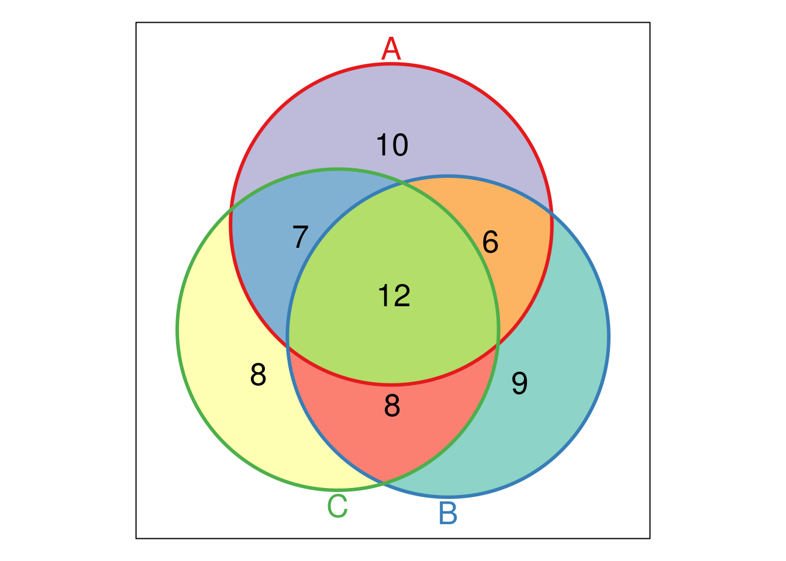
The UpSetR visualises intersections of sets as a matrix in which the rows represent the sets and the columns represent their intersection sizes. For each set that is part of a given intersection, a black filled circle is placed in the corresponding matrix cell. If a set is not part of the intersection, a light gray circle is shown. A vertical black line connects the topmost black circle with the bottom most black circle in each column to emphasise the column-based relationships. The size of the intersections is shown as a bar chart placed on top of the matrix so that each column lines up with exactly one bar. A second bar chart showing the size of the each set is shown to the left of the matrix.
We will first make use of the fromList function to convert our list to a UpSetR compatible input and then generate the figure:
library("UpSetR")
x2 <- fromList(x)
upset(x2)
The following tweet by the author of the package illustrates how Venn and upset diagrams relate to each other.
upset(x2, order.by = "freq")upset(x2, order.by = "degree")upset(x2, order.by = c("freq", "degree"))upset(x2, order.by = c("degree", "freq"))upset(x2, sets = c("A", "B"))upset(x2, sets = c("B", "C", "A"), keep.order = TRUE)
upset(x2, group.by = "sets")## Add set D with a single intersection
x3 <- x2
x3$D <- 0
x3[1, "D"] <- 1
head(x3)## A B C D
## 1 1 0 1 1
## 2 1 0 1 0
## 3 1 0 0 0
## 4 1 0 0 0
## 5 1 0 0 0
## 6 1 0 0 0upset(x3)upset(x3, empty.intersections = "on")Visualising intersections with UpSetR shines with more that 4 sets, as Venn diagrams become practically useless.
Challenge
Generate a bigger dataset containing 10 sets. Try to generate Venn and upset diagrams as shown above.
set.seed(123) x <- replicate(10, sample(featureNames(crc), 35), simplify = FALSE) names(x) <- LETTERS[1:10]
When the number of sets become larger, the options above, as well as nsets, the number of sets (default is 5) and nintersects, the number of intersectios (default is 40) becomes useful.
5.5 Unsupervised learning
In unsupervised learning (UML), no labels are provided, and the learning algorithm focuses solely on detecting structure in unlabelled input data. One generally differentiates between
Clustering, where the goal is to find homogeneous subgroups within the data; the grouping is based on distance between observations.
Dimensionality reduction, where the goal is to identify patterns in the features of the data. Dimensionality reduction is often used to facilitate visualisation of the data, as well as a pre-processing method before supervised learning.
UML presents specific challenges and benefits:
- there is no single goal in UML
- there is generally much more unlabelled data available than labelled data.
Unsupervised learning techniques are paramount for exploratory data analysis and visualisation.
5.6 Hierarchical clustering
How does hierarchical clustering work
Initialisation: Starts by assigning each of the n points its own cluster
Iteration
- Find the two nearest clusters, and join them together, leading to n-1 clusters
- Continue the cluster merging process until all are grouped into a single cluster
Termination: All observations are grouped within a single cluster.
Figure 5.1: Hierarchical clustering: initialisation (left) and colour-coded results after iteration (right).
The results of hierarchical clustering are typically visualised along a dendrogram, where the distance between the clusters is proportional to the branch lengths.
Figure 5.2: Visualisation of the hierarchical clustering results on a dendrogram
In R:
- Calculate the distance using
dist, typically the Euclidean distance. - Hierarchical clustering on this distance matrix using
hclust
Challenge
Apply hierarchical clustering on the
mulvey2015normdata and generate a sample dendrogram using the dedicatedplotmethod as shown below.
d <- dist(t(MSnbase::exprs(mulvey2015norm)))
hcl <- hclust(d)
hcl##
## Call:
## hclust(d = d)
##
## Cluster method : complete
## Distance : euclidean
## Number of objects: 18plot(hcl, main = "Mulvey et al. 2016")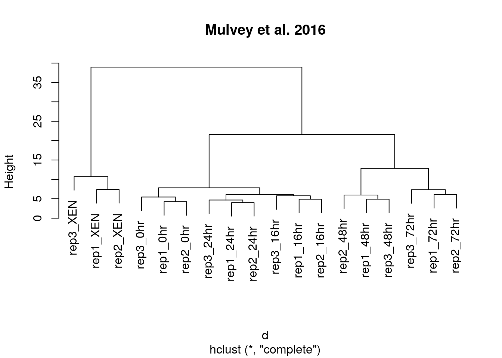
Defining clusters
After producing the hierarchical clustering result, we need to cut the tree (dendrogram) at a specific height to defined the clusters. For example, on our test dataset above, we could decide to cut it at a distance around 15, that would produce 3 clusters, namely the XEN samples, the late time points 72 and 48 hours, and the early time points.
Figure 5.3: Cutting the dendrogram at height 15.
In R we can us the cutree function to
- cut the tree at a specific height:
cutree(hcl, h = 15) - cut the tree to get a certain number of clusters:
cutree(hcl, k = 3)
Challenge
Cut the hierarchical clustering result at a height to obtain 4 clusters by setting
h.Cut the hierarchical clustering result at a height to obtain 4 clusters by setting directly
k, and verify that both provide the same results.What happens if we wanted to obtain 5 clusters.
plot(hcl)
abline(h = 11, col = "red")
cutree(hcl, k = 4)
cutree(hcl, h = 11)
identical(cutree(hcl, k = 4), cutree(hcl, h = 11))
plot(hcl, labels = cutree(hcl, k = 4))For more advanced dendrogram visualisations, see dendextend.
Effect of distance and clustering algorithm
It is important to highlight that the type of distance and the type of clustering algorithms will affect the result. Let’s observe how using the euclidean or Pearson correlation distances between expression profiles can fundamentally change the results.
## toy example: 3 genes, 5 samples from Olga Vitek
gene1 <- c(1, 6, 2, 4, 7)
gene2 <- gene1 + 4
gene3 <- gene2/3 + c(0, 2, 0, 4, 0)
e <- rbind(gene1, gene2, gene3)
dimnames(e) <- list(paste0("gene", 1:3),
paste0("sample", 1:5))
e## sample1 sample2 sample3 sample4 sample5
## gene1 1.000000 6.000000 2 4.000000 7.000000
## gene2 5.000000 10.000000 6 8.000000 11.000000
## gene3 1.666667 5.333333 2 6.666667 3.666667matplot(t(e), type = "b", xlab = "Samples", ylab = "Expression")library("bioDist")
par(mfrow = c(1, 2))
plot(hclust(euc(e)), main = "Euclidean distane")
plot(hclust(cor.dist(e)), main = "Pearson correlational distance")Many of the machine learning methods that are regularly used are sensitive to difference scales. This applies to unsupervised methods as well as supervised methods. Below, we show how centering and scaling the data (row-wise, hence the transposition) affects the euclidean distance but not the Pearson correlation distance.
e2 <- t(scale(t(e)))
## or manually
## e2 <- (e - rowMeans(e)) / genefilter::rowSds(e)
matplot(t(e2), type = "b", xlab = "Samples", ylab = "Expression")par(mfrow = c(2, 2))
plot(hclust(euc(e)), main = "Euclidean distance")
plot(hclust(euc(e2)), main = "Euclidean distance (scaled/centred)")
plot(hclust(cor.dist(e)), main = "Pearson correlational distance")
plot(hclust(cor.dist(e2)), main = "Pearson correlational distance (scaled/centred)")
Finally, the clustering method itself (the method argument in hclust) will also influence the results:
ALL_sign <- ALL_bcrneg[fData(ALL_bcrneg)$adj.P.Val < 0.005, ]
par(mfrow = c(1, 3))
plot(hclust(dist(ALL_sign), method = "complete"))
plot(hclust(dist(ALL_sign), method = "single"))
plot(hclust(dist(ALL_sign), method = "average"))5.7 k-means clustering
The k-means clustering algorithms aims at partitioning n observations into a fixed number of k clusters. The algorithm will find homogeneous clusters.
In R, we use
stats::kmeans(x, centers = 3, nstart = 10)where
xis a numeric data matrixcentersis the pre-defined number of clusters- the k-means algorithm has a random component and can be repeated
nstarttimes to improve the returned model
Challenge:
Run the k-means algorithm on the reduce
hlmspatial proteomics dataset, save the results in a new variablecl, and explore its output when printed. Set the number of clusters to be the number of annotated sub-cellular niches.The actual results of the algorithms, i.e. the cluster membership can be accessed in the
clusterselement of the clustering result output. Use it to colour the inferred clusters to generate a figure like that shown below.
cl <- kmeans(MSnbase::exprs(hlm), length(getMarkerClasses(hlm)), nstart = 10)
pairs(MSnbase::exprs(hlm)[, c(1, 3, 5, 9)], col = cl$cluster)
How does k-means work
Below, we use a manually generated dataset with 3 clusters.
Initialisation: randomly assign class membership
set.seed(123)
x <- data.frame(x = rnorm(100, 5, 4),
y = rnorm(100, 5, 4))
init <- sample(3, nrow(x), replace = TRUE)
plot(x, col = init)Figure 5.4: k-means random intialisation
Iteration:
- Calculate the centre of each subgroup as the average position of all observations is that subgroup.
- Each observation is then assigned to the group of its nearest centre.
It’s also possible to stop the algorithm after a certain number of iterations, or once the centres move less than a certain distance.
par(mfrow = c(1, 2))
plot(x, col = init)
centres <- sapply(1:3, function(i) colMeans(x[init == i, ], ))
centres <- t(centres)
points(centres[, 1], centres[, 2], pch = 19, col = 1:3)
tmp <- dist(rbind(centres, x))
tmp <- as.matrix(tmp)[, 1:3]
ki <- apply(tmp, 1, which.min)
ki <- ki[-(1:3)]
plot(x, col = ki)
points(centres[, 1], centres[, 2], pch = 19, col = 1:3)Figure 5.5: k-means iteration: calculate centers (left) and assign new cluster membership (right)
Termination: Repeat iteration until no point changes its cluster membership.

k-means convergence (credit Wikipedia)
Model selection
Due to the random initialisation, one can obtain different clustering results. When k-means is run multiple times, the best outcome, i.e. the one that generates the smallest total within cluster sum of squares (SS), is selected. The total within SS is calculated as:
For each cluster results:
- for each observation, determine the squared euclidean distance from observation to centre of cluster
- sum all distances
Note that this is a local minimum; there is no guarantee to obtain a global minimum.
Below, we see that if we repeat k-means on our x data multiple times, setting the number of iterations to 1 or greater and check whether you repeatedly obtain the same results.
cl1 <- kmeans(x, centers = 3, nstart = 10)
cl2 <- kmeans(x, centers = 3, nstart = 10)
table(cl1$cluster, cl2$cluster)##
## 1 2 3
## 1 0 29 0
## 2 0 0 33
## 3 38 0 0cl3 <- kmeans(x, centers = 3, nstart = 1)
cl4 <- kmeans(x, centers = 3, nstart = 1)
table(cl3$cluster, cl4$cluster)##
## 1 2 3
## 1 0 37 1
## 2 27 0 2
## 3 0 0 33How to determine the number of clusters
- Run k-means with
k=1,k=2, …,k=n - Record total within SS for each value of k.
- Choose k at the elbow position, as illustrated below.
ks <- 5:20
x <- MSnbase::exprs(hlm)
tot_within_ss <- sapply(ks, function(k) {
cl <- kmeans(x, k, nstart = 10)
cl$tot.withinss
})
plot(ks, tot_within_ss, type = "b",
ylab = "Total within squared distances",
xlab = "Values of k tested")There exists other metrics, other than the total within cluster sum of squares that can be applied, such as the gap statistic (see cluster::clusGap), or the Akaike (AIC) and Bayesian (BIC) information criteria.
Challenge
Let’s use what we have learned to cluster the 2337 proteins from the mulvey2015norm data in 20 clusters.
Use k-means to cluster the
mulvey2015normdata, settingcenters = 20. Take care in repeating the clustering more than once.To plot the expression profiles for the 20 clusters, I suggest to use
gplot2. Do do so, create a 2337 proteins by 18 sample dataframe (or tibble), appending the protein accession numbers (from the feature data - you can use theMSnbase::ms2dfhelper function.) and cluster numbers as 2 additional columns.Use
gatherto transform the data in a long format.Use
ggplot2to reproduce the figure below. Optional: usestat_summaryto add a mean profile for each cluster of proteins.

kmeans clustering on mulvey2015norm
library("pRolocdata")
data(mulvey2015norm)
cl <- kmeans(MSnbase::exprs(mulvey2015norm),
centers = 16, nstart = 10, iter.max = 50)
x <- ms2df(mulvey2015norm, fcol = "Accession")
x[["cluster"]] <- cl$cluster
tb <- gather(x, key = sample, value = expression, -cluster, -Accession) %>%
as_tibble
## Check dimensions
stopifnot(nrow(tb) == prod(dim(mulvey2015norm)))
pd <- pData(mulvey2015norm)
tb$time <- pd[tb[["sample"]], "times"]
tb$rep <- pd[tb[["sample"]], "rep"]
## Plotting
kmp <- ggplot(data = tb,
aes(x = paste(time, rep), y = expression,
group = Accession, colour = as.factor(cluster))) +
geom_line() +
facet_wrap(~ cluster) +
theme(legend.position = "none") +
scale_x_discrete("Time course")
kmp2 <- kmp +
stat_summary(aes(group = cluster),
fun.y = mean, geom = "line",
colour = "black")5.8 Principal component analysis (PCA)
Dimensionality reduction techniques are widely used and versatile techniques that can be used to:
- find structure in features
- pre-processing for other ML algorithms, and
- aid in visualisation.
The basic principle of dimensionality reduction techniques is to transform the data into a new space that summarise properties of the whole data set along a reduced number of dimensions. These are then ideal candidates used to visualise the data along these reduced number of informative dimensions.
How does it work
Principal Component Analysis (PCA) is a technique that transforms the original n-dimensional data into a new n-dimensional space.
- These new dimensions are linear combinations of the original data, i.e. they are composed of proportions of the original variables.
- Along these new dimensions, called principal components, the data expresses most of its variability along the first PC, then second, …
- Principal components are orthogonal to each other, i.e. non-correlated.
Figure 5.6: Original data (left). PC1 will maximise the variability while minimising the residuals (centre). PC2 is orthogonal to PC1 (right).
In R, we can use the prcomp function.
Let’s apply PCA on the mulvey2015norm samples.
pca <- prcomp(MSnbase::exprs(t(mulvey2015norm)))
summary(pca)## Importance of components:
## PC1 PC2 PC3 PC4 PC5 PC6
## Standard deviation 12.803 5.8737 2.32468 1.92711 1.50167 1.31702
## Proportion of Variance 0.748 0.1574 0.02466 0.01695 0.01029 0.00791
## Cumulative Proportion 0.748 0.9054 0.93003 0.94698 0.95727 0.96518
## PC7 PC8 PC9 PC10 PC11 PC12
## Standard deviation 1.27894 1.09257 1.06266 0.96421 0.83033 0.80686
## Proportion of Variance 0.00746 0.00545 0.00515 0.00424 0.00315 0.00297
## Cumulative Proportion 0.97265 0.97809 0.98325 0.98749 0.99063 0.99360
## PC13 PC14 PC15 PC16 PC17 PC18
## Standard deviation 0.72439 0.64802 0.57176 0.2582 0.25217 3.468e-15
## Proportion of Variance 0.00239 0.00192 0.00149 0.0003 0.00029 0.000e+00
## Cumulative Proportion 0.99600 0.99791 0.99941 0.9997 1.00000 1.000e+00A summary of the prcomp output shows that along PC1 along, we are able to retain over 75% of the total variance in the data.
Visualisation
A biplot features all original points re-mapped (rotated) along the first two PCs as well as the original features as vectors along the same PCs.
biplot(pca)Feature vectors that are in the same direction in PC space are also correlated in the original data space. This can be seen below when running PCA on the protein (rather than the samples).
biplot(prcomp(MSnbase::exprs(mulvey2015norm)))One important piece of information when using PCA is the proportion of variance explained along the PCs, in particular when dealing with high dimensional data, as PC1 and PC2 (that are generally used for visualisation), might only account for an insufficient proportion of variance to be relevant on their own.
In the code chunk below, I extract the standard deviations from the PCA result to calculate the variances, then obtain the percentage of and cumulative variance along the PCs.
var <- pca$sdev^2
(pve <- var/sum(var))## [1] 7.479554e-01 1.574190e-01 2.465846e-02 1.694543e-02 1.028939e-02
## [6] 7.914534e-03 7.463453e-03 5.446791e-03 5.152624e-03 4.242092e-03
## [11] 3.145870e-03 2.970534e-03 2.394341e-03 1.916061e-03 1.491659e-03
## [16] 3.042167e-04 2.901557e-04 5.489151e-32cumsum(pve)## [1] 0.7479554 0.9053744 0.9300329 0.9469783 0.9572677 0.9651822 0.9726457
## [8] 0.9780924 0.9832451 0.9874872 0.9906330 0.9936036 0.9959979 0.9979140
## [15] 0.9994056 0.9997098 1.0000000 1.0000000Challenge
Repeat the PCA analysis above, reproducing the biplot and preparing a barplot of the percentage of variance explained by each PC.
It is often useful to produce custom figures using the data coordinates in PCA space, which can be accessed as
xin theprcompobject. Reproduce the PCA plots below, along PC1 and PC2 and PC3 and PC4 respectively.
par(mfrow = c(1, 2))
plot(pca$x[, 1:2], col = mulvey2015norm$times)
plot(pca$x[, 3:4], col = mulvey2015norm$times)Data pre-processing
We haven’t looked at other prcomp parameters, other that the first one, x. There are two other ones that are or importance, in particular in the light of the section on pre-processing above, which are center and scale.. The former is set to TRUE by default, while the second one is set the FALSE.
Example Repeat the analysis comparing the need for scaling on the mtcars dataset, but using PCA instead of hierarchical clustering. When comparing the two.
par(mfrow = c(1, 2))
biplot(prcomp(mtcars, scale = FALSE), main = "No scaling") ## 1
biplot(prcomp(mtcars, scale = TRUE), main = "With scaling") ## 2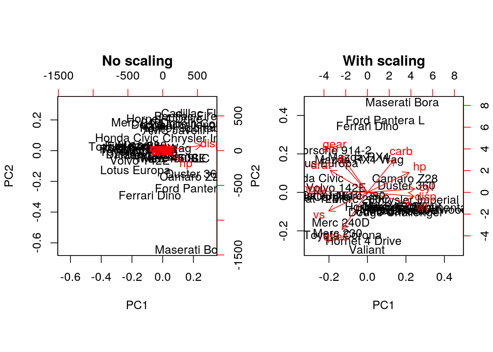
Without scaling, disp and hp are the features with the highest loadings along PC1 and 2 (all others are negligible), which are also those with the highest units of measurement. Scaling removes this effect.
Final comments on PCA
Real datasets often come with missing values. In R, these should be encoded using NA. Unfortunately, standard PCA cannot deal with missing values, and observations containing NA values will be dropped automatically. This is a viable solution only when the proportion of missing values is low. Alternatively, the NIPALS (non-linear iterative partial least squares) implementation does support missing values (see nipals::nipals).
Finally, we should be careful when using categorical data in any of the unsupervised methods described above. Categories are generally represented as factors, which are encoded as integer levels, and might give the impression that a distance between levels is a relevant measure (which it is not, unless the factors are ordered). In such situations, categorical data can be dropped, or it is possible to encode categories as binary dummy variables. For example, if we have 3 categories, say A, B and C, we would create two dummy variables to encode the categories as:
## x y
## A 1 0
## B 0 1
## C 0 0so that the distance between each category are approximately equal to 1.
Challenge
Produce the PCA plot for the ALL_bcrneg samples, and annotating the NEG and BCR/ABL samples on the plot. Do you think that the two first components offer enough resolution?
pca <- prcomp(t(MSnbase::exprs(ALL_bcrneg)), scale = TRUE, center = TRUE)
plot(pca$x[, 1:2], col = ALL_bcrneg$mol.bio, cex = 2)
legend("bottomright", legend = unique(ALL_bcrneg$mol.bio),
pch = 1, col = c("black", "red"), bty = "n")
text(pca$x[, 1], pca$x[, 2], sampleNames(ALL_bcrneg), cex = 0.8)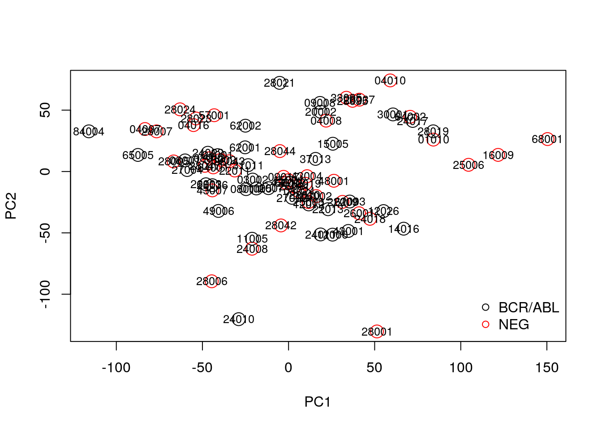
par(mfrow = c(1, 2))
barplot(pca$sdev^2/sum(pca$sdev^2),
xlab="Principle component",
ylab="% of variance")
barplot(cumsum(pca$sdev^2/sum(pca$sdev^2) ),
xlab="Principle component",
ylab="Pumulative % of variance")## Conclusion: the two first principle components are insufficientRepeat the kmeans clustering analysis on the hml data above and visualise the results on a PCA plot.
cl <- kmeans(MSnbase::exprs(hlm), length(getMarkerClasses(hlm)), nstart = 10)
pca <- prcomp(MSnbase::exprs(hlm), scale = TRUE, center = TRUE)
plot(pca$x[, 1:2], col = cl$cluster)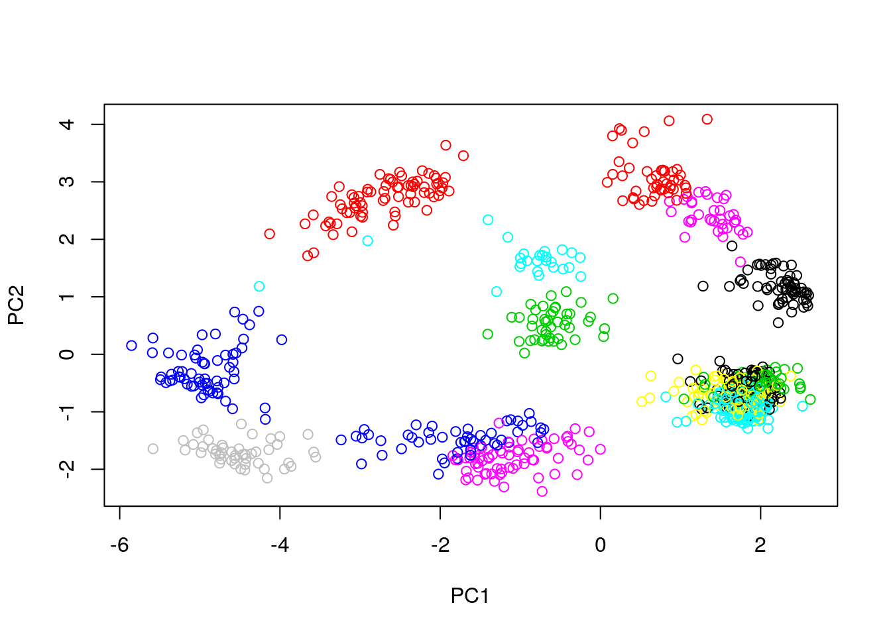
Produce a PCA with the proteins of the complete hyperLopit2015 experiment. Label the results using final.assignment feature variable (corresponding to the proteins assignment to they sub-cellular localisation) and scale to size of the points based on the assignment scores available in the svm.score feature variable (this might need to transform the scores to make differences visisble).
x <- prcomp(MSnbase::exprs(hyperLOPIT2015))
plot(x$x[, 1:2],
pch = ifelse(fData(hyperLOPIT2015)$final.assignment == "unknown", 1, 19),
col = as.factor(fData(hyperLOPIT2015)$final.assignment),
cex = exp(fData(hyperLOPIT2015)$svm.score) - 1)
5.9 t-Distributed Stochastic Neighbour Embedding
t-Distributed Stochastic Neighbour Embedding (t-SNE) is a non-linear dimensionality reduction technique, i.e. that different regions of the data space will be subjected to different transformations. t-SNE will compress small distances, thus bringing close neighbours together, and will ignore large distances. It is particularly well suited for very high dimensional data.
In R, we can use the Rtsne function from the Rtsne.
As with PCA, the data can be scaled and centred prior the running t-SNE (see the pca_center and pca_scale arguments). The algorithm is stochastic, and will produce different results at each repetition.
5.9.1 Parameter tuning
t-SNE has two important parameters that can substantially influence the clustering of the data
- Perplexity: balances global and local aspects of the data.
- Iterations: number of iterations before the clustering is stopped.
It is important to adapt these for different data. The figure below shows a 5032 by 20 dataset that represent protein sub-cellular localisation.

Effect of different perplexity and iterations when running t-SNE
As a comparison, below are the same data with PCA (left) and t-SNE (right).

PCA and t-SNE on hyperLOPIT
5.10 PCA loadings vs differential expression
Let’s now compare the PCA loadings as calculated above and the p-values. As we can see below, large loadings may or may not correspond to small p-values.
pca <- prcomp(t(MSnbase::exprs(ALL_bcrneg)), scale = TRUE, center = TRUE)
plot(pca$rotation[, 1], fData(ALL_bcrneg)$adj.P.Val,
xlab = "PCA Loading", ylab = "Adjusted p-values")Let’s now repeat the same camparison, focusing on differentially expressed genes.
table(sign <- fData(ALL_bcrneg)$adj.P.Val < 0.05)##
## FALSE TRUE
## 12442 183ALL_sign <- ALL_bcrneg[sign, ]
pca_sign <- prcomp(t(MSnbase::exprs(ALL_sign)), center = TRUE, scale = TRUE)Below, we see that there is better separation when we focus on differentially expressed genes and better consistency between p-values and loadings. However we can’t do this in practice!
plot(pca_sign$x[,1:2], col = ALL_sign$mol.biol, pch = 19)
legend("bottomleft", legend = unique(ALL_sign$mol.biol),
col = 1:2, pch = 19, bty = "n")plot(pca_sign$rotation[, 1], fData(ALL_sign)$adj.P.Val,
xlab = "PCA Loading", ylab = "Adjusted p-values")5.11 Heatmaps
heatmap(MSnbase::exprs(mulvey2015norm))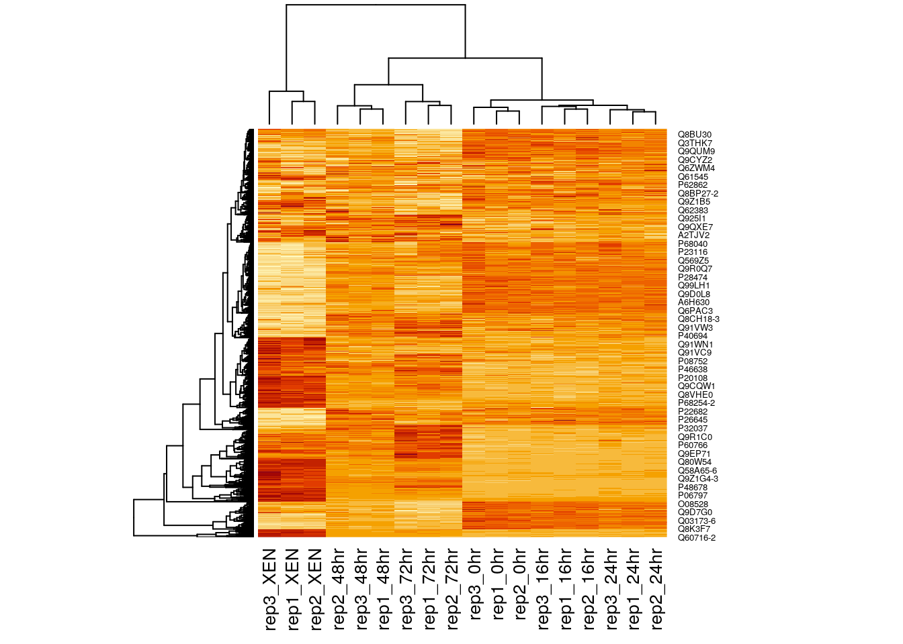
A heatmap is composed of two hierarchical clusters (one along the rows, one along the columns, leading to their re-ordering based on their similarity) and a intensity matrix. Each of these components is subject to parameters and options.
As we have seen above, the distance used for clustering can have a substantial effect on the results, which is conformed below.
heatmap(MSnbase::exprs(mulvey2015norm), distfun = cor.dist)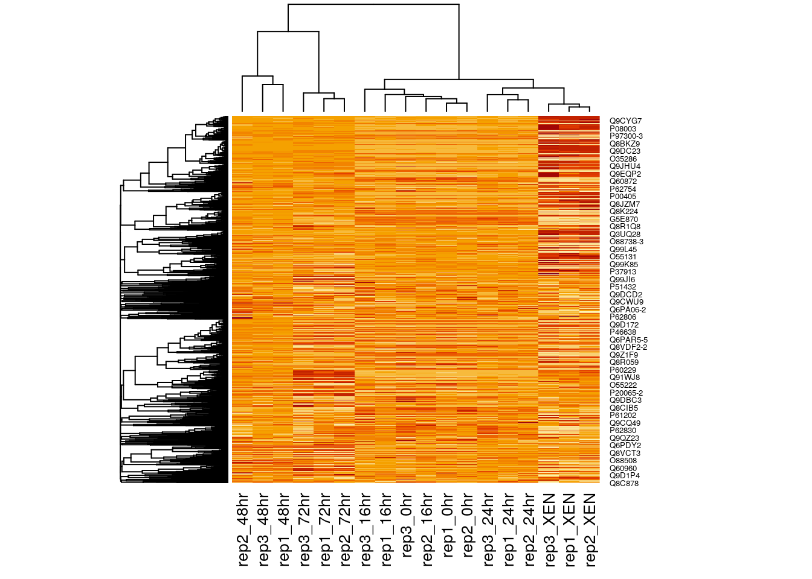
Another important argument, scale controls whether rows, columns or none are scaled. Let’s re-use the toy data from the hierarchical clustering section below.
heatmap(e, scale = "none", main = "No scaling")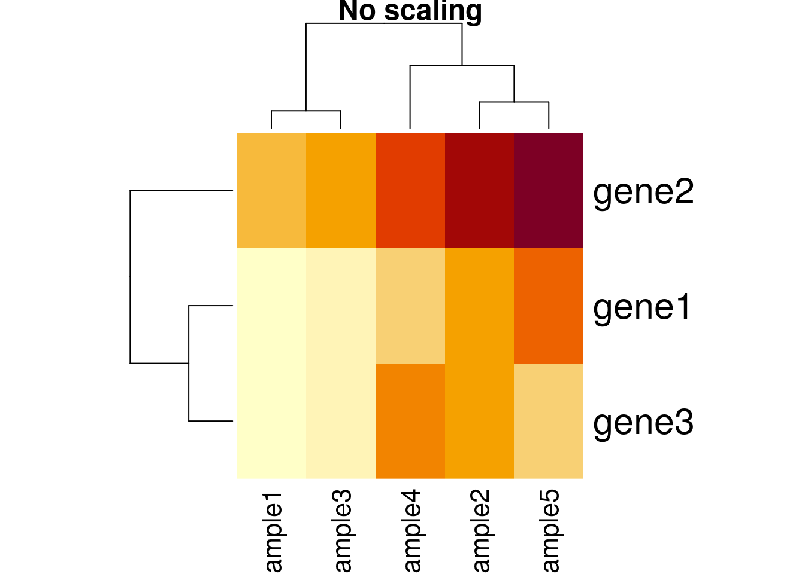
heatmap(e, scale = "row", main = "Scaling along rows")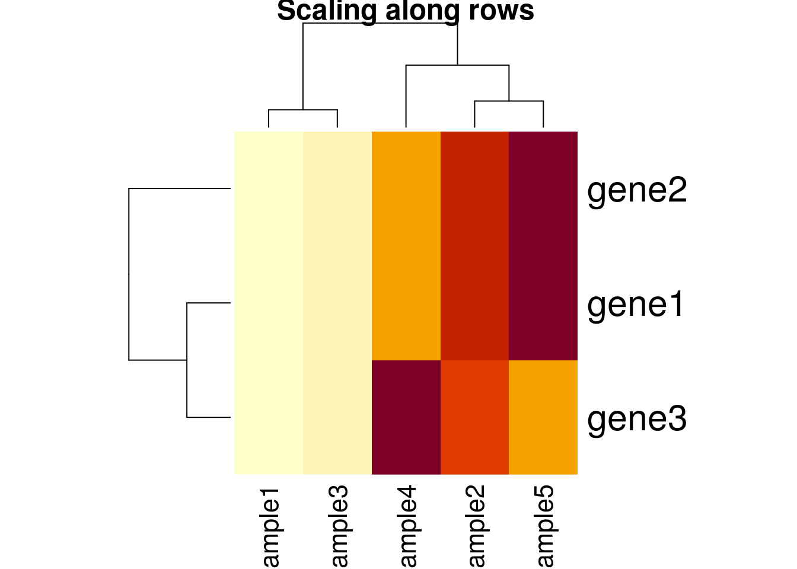
heatmap(e, scale = "column", main = "Scaling along columns")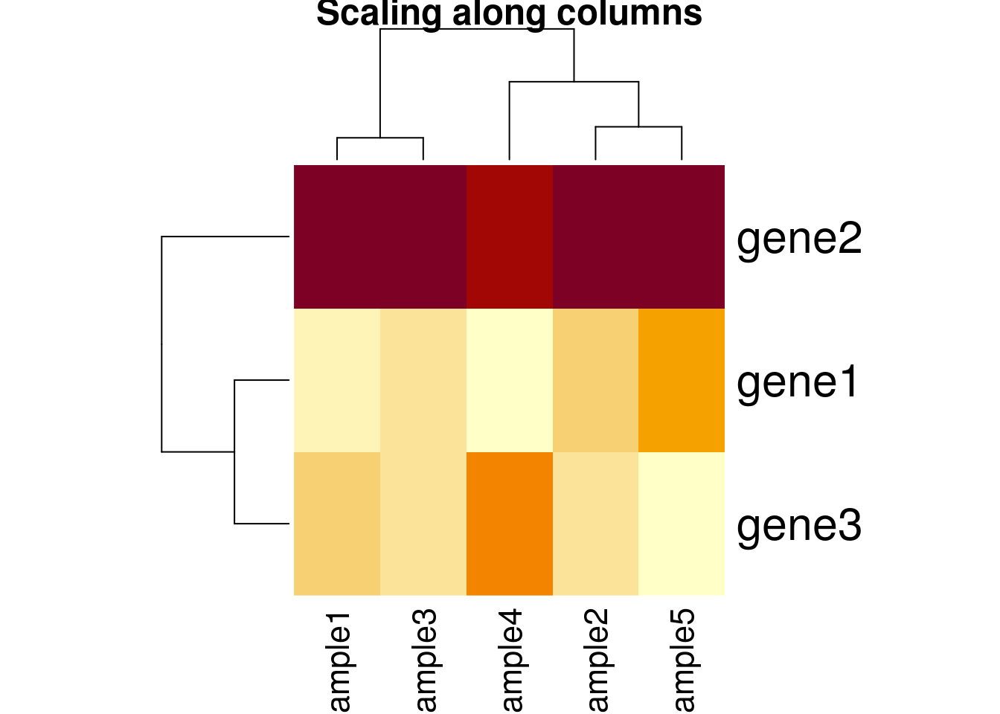
Based on the caveats above, it is essential to present and interpret heatmaps with great care. It is of course possible to use any type of data, not only expression data, to build a heatmap.
There exists several packages that allow to produce heatmaps with various levels of sophistication, such as heatmap.2 from the gplots package, the Heatplus package, or the ComplexHeatmap packages, demonstrated below.
library("ComplexHeatmap")
x <- MSnbase::exprs(mulvey2015norm)
hcl <- hclust(dist(x))
cl <- cutree(hcl, k = 12)
ha1 <- HeatmapAnnotation(data.frame(time = factor(mulvey2015norm$time)))
ha2 <- HeatmapAnnotation(boxplot = anno_boxplot(x))
ha3 <- rowAnnotation(data.frame(cluster = factor(cl)))
Heatmap(x,
top_annotation = ha1,
bottom_annotation = ha2,
column_names_gp = gpar(fontsize = 8),
row_names_gp = gpar(fontsize = 3),
bottom_annotation_height = unit(3, "cm")) + ha3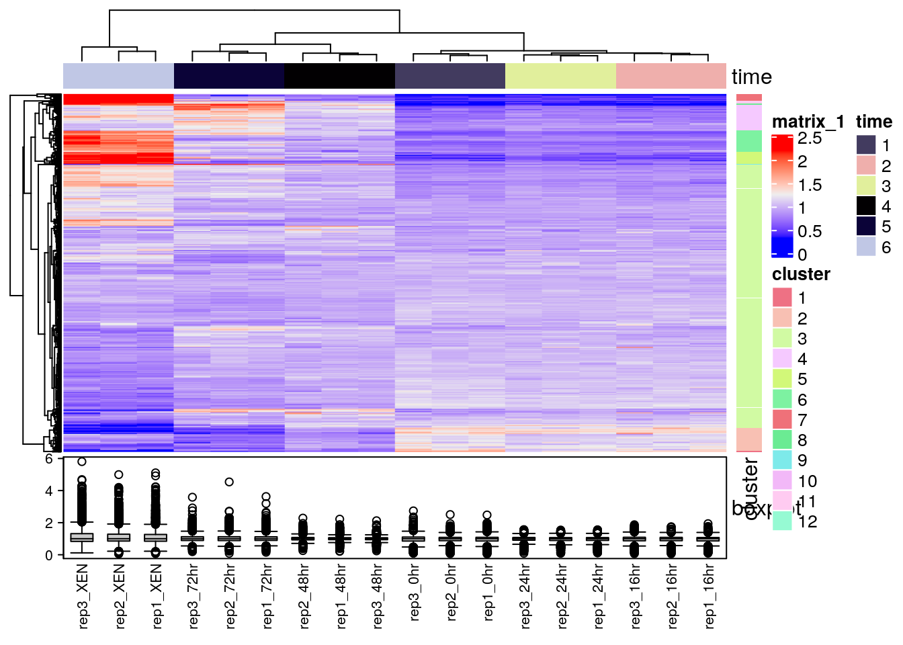
Finally, the heatmaply can be used to generate interactive heatmaps.
library("heatmaply")
heatmaply(x[1:100, ])Reference:
Key M. A tutorial in displaying mass spectrometry-based proteomic data using heat maps. BMC Bioinformatics. 2012;13 Suppl 16:S10. doi: 10.1186/1471-2105-13-S16-S10. Epub 2012 Nov 5. Review. PMID: 23176119; PMCID: PMC3489527.